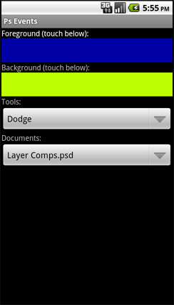

Events From Photoshop
The Android PhotoshopEvents example shows how to monitor changes occuring in Photoshop and display that information on the client. The source code for this project is located in samples/android/photoshopevents. Import the PhotoshopEvents example application into Eclipse for the details.
This example gets the current status of Photoshop at launch time. It then asks for Photoshop to send it notifications when things change. It monitors the current open documents and notes which one is active. It also monitors the current tool, as well as the current foreground and background colors. A user of the client application can change these values and see them reflected in the Photoshop user interface.
Touching the color bars below the Foreground or Background text will pop up a color picker dialog. The new color will be sent to Photoshop and reflected in the Tool bar and the Color panel. Any change made in Photoshop will be reflected in the client application. Photoshop will send foregroundColorChanged or backgroundColorChanged messages to the client application. Along with these messages will be the current color. As an example, FF0000 would be the string sent if red is selected in the Color panel or via the Color picker dialog in Photoshop.
Tool and document changes are displayed in the drop-down menus. Users can pick a new tool or change documents via the drop-down menus and see those actions reflected in Photoshop.